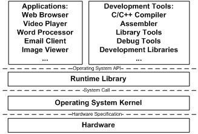

1.3 站得高，望得远
系统软件这个概念其实比较模糊，传统意义上一般将用于管理计算机本身的软件称为系统软件，以区别普通的应用程序。系统软件可以分成两块，一块是平台性的，比如操作系统内核、驱动程序、运行库和数以千计的系统工具；另外一块是用于程序开发的，比如编译器、汇编器、链接器等开发工具和开发库。本书将着重介绍系统软件的一部分，主要是链接器和库（包括运行库和开发库）的相关内容。
计算机系统软件体系结构采用一种层的结构，有人说过一句名言：
“计算机科学领域的任何问题都可以通过增加一个间接的中间层来解决” 1
"Any problem in computer science can be solved by another layer of indirection."
1 遗憾的是，这句经典的名言出处无从考证，据说是有人从图灵奖的获得者Butler Lampson的讲座上听来的；也有人说是EDSAC的发明者David Wheeler讲的；还有人指出这是CMU计算机系创始人Alan Perlis的名言。
这句话几乎概括了计算机系统软件体系结构的设计要点，整个体系结构从上到下都是按照严格的层次结构设计的。不仅是计算机系统软件整个体系是这样的，体系里面的每个组件比如操作系统本身，很多应用程序、软件系统甚至很多硬件结构都是按照这种层次的结构组织和设计的。系统软件体系结构中，各种软件的位置如图1-3所示。

图1-3 计算机软件体系结构
每个层次之间都须要相互通信，既然须要通信就必须有一个通信的协议，我们一般将其称为接口（Interface），接口的下面那层是接口的提供者，由它定义接口；接口的上面那层是接口的使用者，它使用该接口来实现所需要的功能。在层次体系中，接口是被精心设计过的，尽量保持稳定不变，那么理论上层次之间只要遵循这个接口，任何一个层都可以被修改或被替换。除了硬件和应用程序，其他都是所谓的中间层，每个中间层都是对它下面的那层的包装和扩展。正是这些中间层的存在，使得应用程序和硬件之间保持相对的独立，比如硬件和操作系统都日新月异地发展，但是最初为80386芯片和DOS系统设计的软件在最新的多核处理器和Windows Vista下还是能够运行的，这方面归功于硬件和操作系统本身保持了向后兼容性，另一方面不得不归功于这种层次结构的设计方式。最近开始流行的虚拟机技术更是在硬件和操作系统之间增加了一层虚拟层，使得一个计算机上可以同时运行多个操作系统，这也是层次结构带来的好处，在尽可能少改变甚至不改变其他层的情况下，新增加一个层次就可以提供前所未有的功能。
我们的软件体系中，位于最上层的是应用程序，比如我们平时用到的网络浏览器、Email客户端、多媒体播放器、图片浏览器等。从整个层次结构上来看，开发工具与应用程序是属于同一个层次的，因为它们都使用一个接口，那就是操作系统应用程序编程接口（Application Programming Interface）。应用程序接口的提供者是运行库，什么样的运行库提供什么样的API，比如Linux下的Glibc库提供POSIX的API；Windows的运行库提供Windows API，最常见的32位Windows提供的API又被称为Win32。
运行库使用操作系统提供的系统调用接口（System call Interface），系统调用接口在实现中往往以软件中断（Software Interrupt）的方式提供，比如Linux使用0x80号中断作为系统调用接口，Windows使用0x2E号中断作为系统调用接口（从Windows XP Sp2开始，Windows开始采用一种新的系统调用方式）。
操作系统内核层对于硬件层来说是硬件接口的使用者，而硬件是接口的定义者，硬件的接口定义决定了操作系统内核，具体来讲就是驱动程序如何操作硬件，如何与硬件进行通信。这种接口往往被叫做硬件规格（Hardware Specification），硬件的生产厂商负责提供硬件规格，操作系统和驱动程序的开发者通过阅读硬件规格文档所规定的各种硬件编程接口标准来编写操作系统和驱动程序。